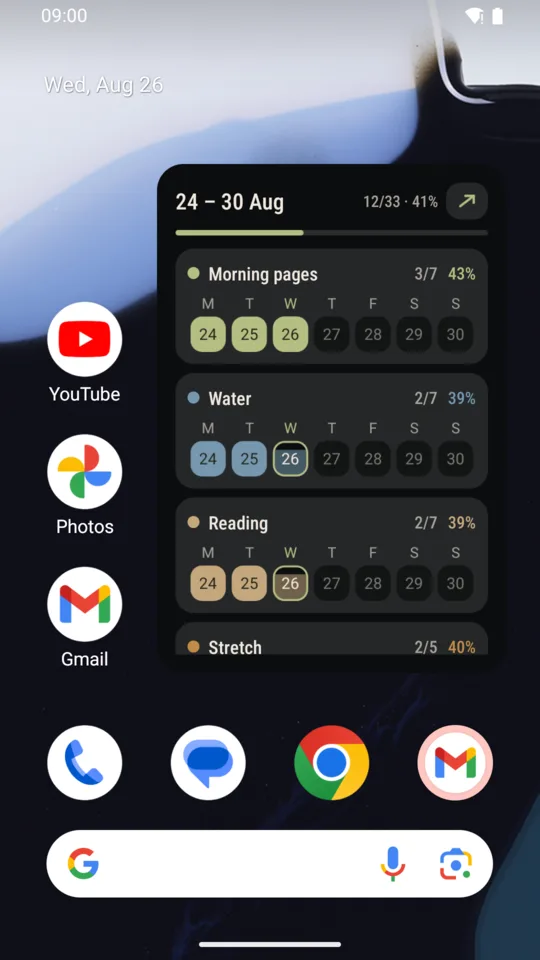
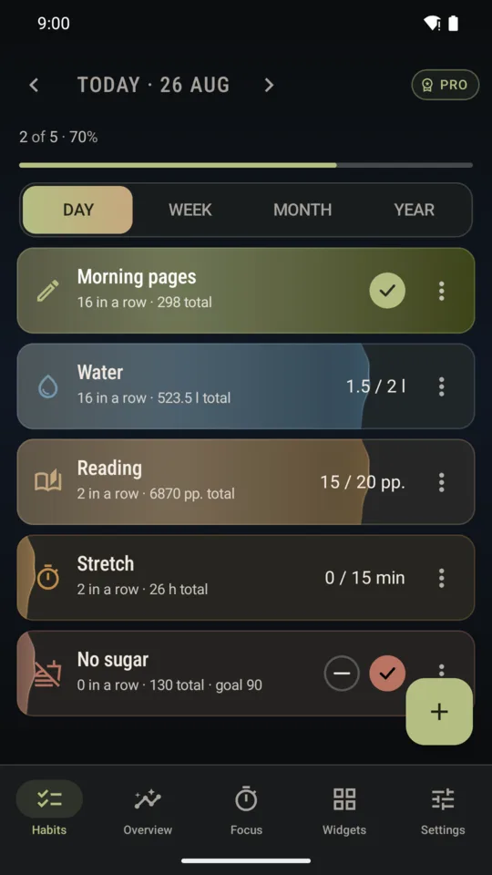
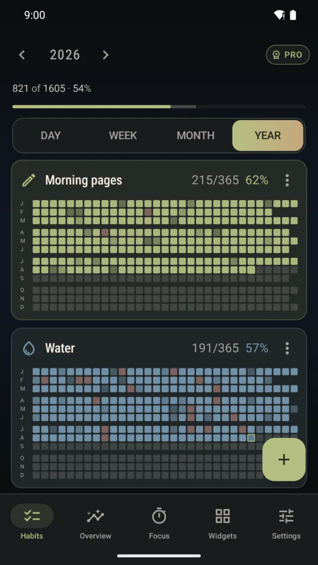
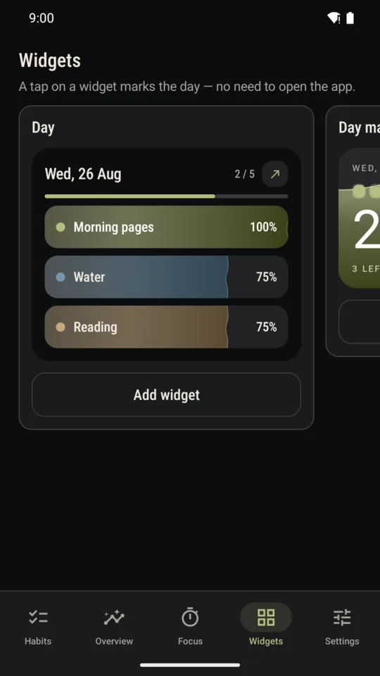

SoftHabit · Android
Mark the day from a home-screen widget. Record half when you did half. Watch the year fill in. No streaks, no account, nothing leaves your phone.
Get it on Google Play Free for four habits. Pro is a one-time purchase — not a subscription.
Each habit goes from 0 to 100 %. Tap the card for a quarter, hold it to pour. If you did half, the record says half — not “failed”.

No chain to keep whole, no counter that resets to zero and takes the month with it. The year view keeps all 365 days in one grid: the fuller a cell, the more you did. You read the pattern, not a score.

Six home-screen widgets — a Today tile, day, week, month, year and a combined view. Tap a cell and the day is written down. The launcher icon itself fills as today's habits get done.

Leave a reminder on Smart and the app learns when you usually mark that habit, then nudges you a little after. Same-time reminders arrive as one notification.
A habit you're putting down isn't something you “do”. It asks you in the evening how the day went, and keeps the run of days you held on.
For habits that take time: pick a length, put the phone down. The minutes go into the habit when the circle ends, screen off or on.
Fill in days before the habit existed. The record starts where your practice did, not where the form was saved.
A blue-black night scene or a warm paper day scene. Each habit gets its own icon and colour. Your choice stays chosen.
No account, no analytics, no crash reporting. The only network call is Google Play Billing. Android's own backup moves your data to a new phone.
No account, no ads, no time limit
One purchase. Nothing renews.
Get it on Google Play Android 8.0 and newer · English and Russian